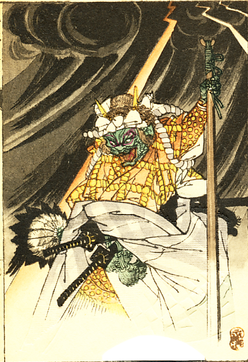
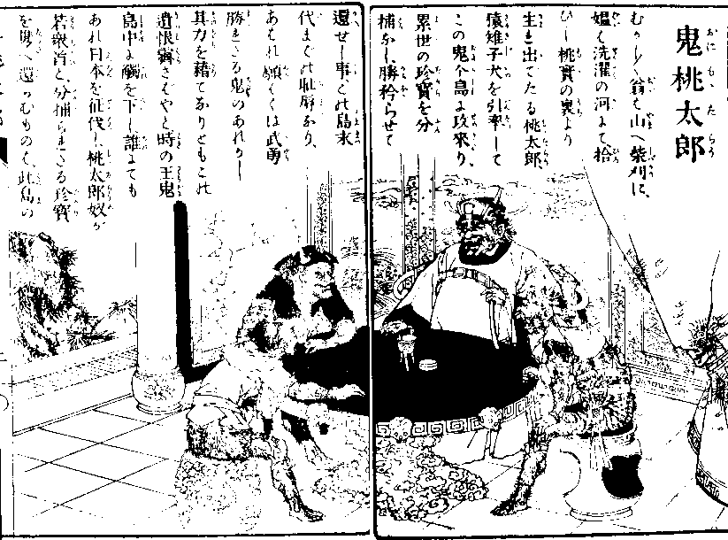
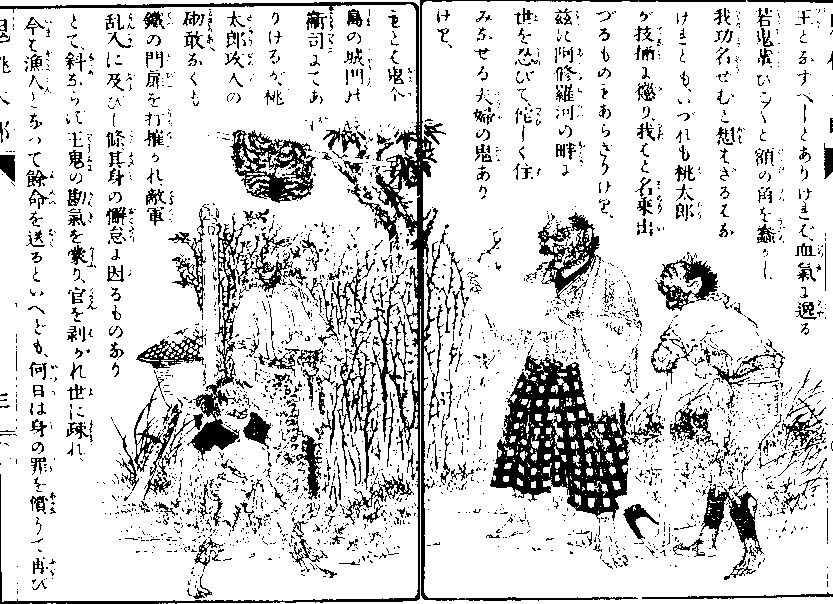
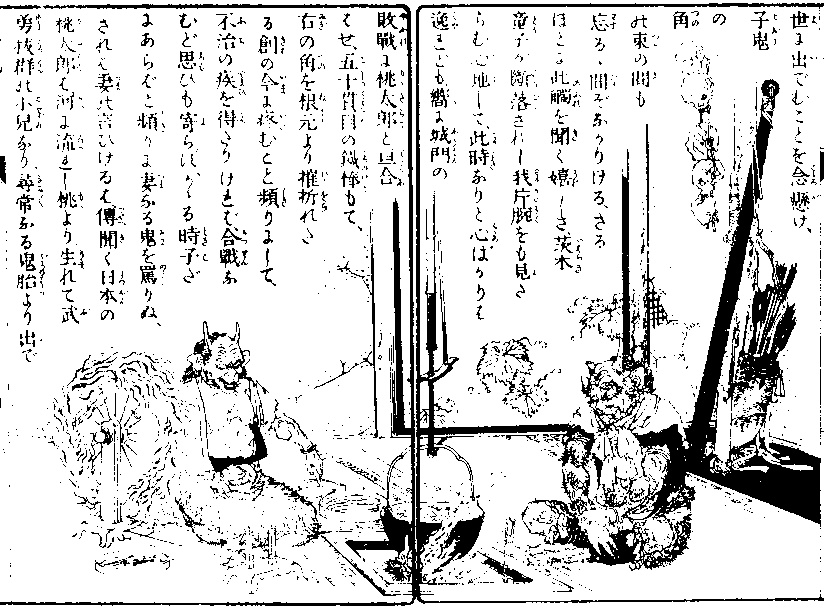
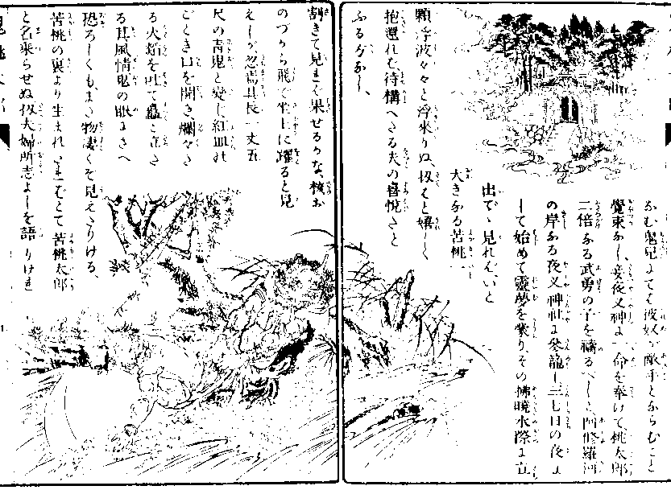
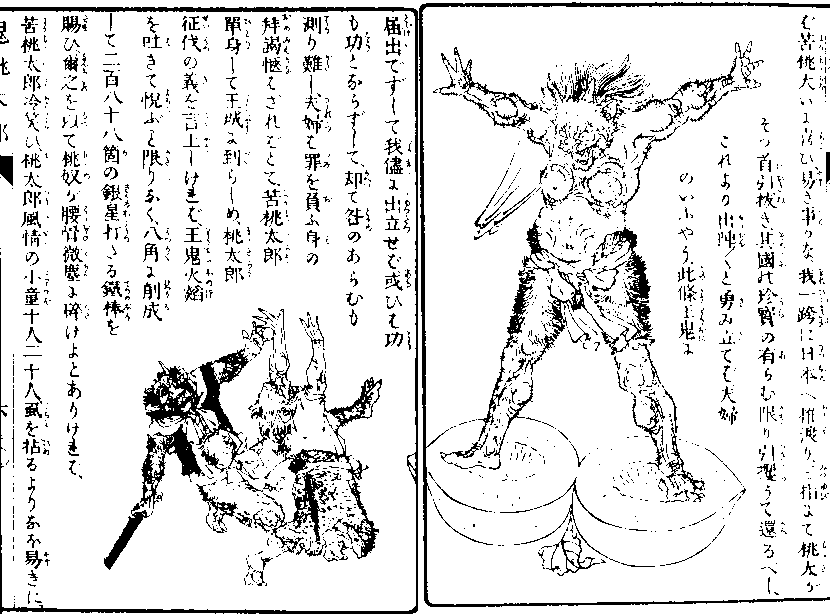
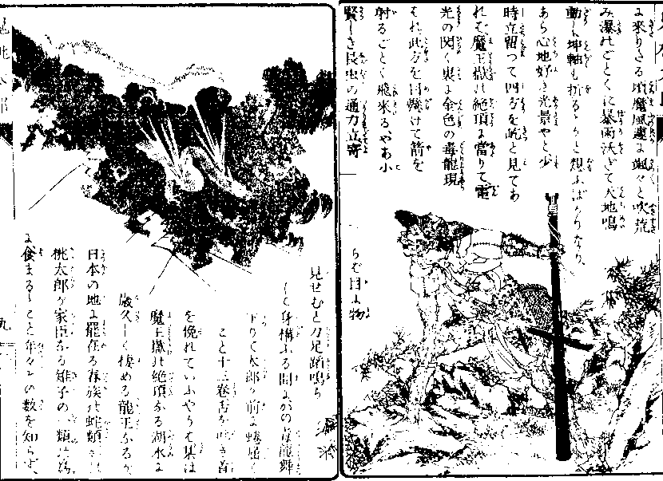
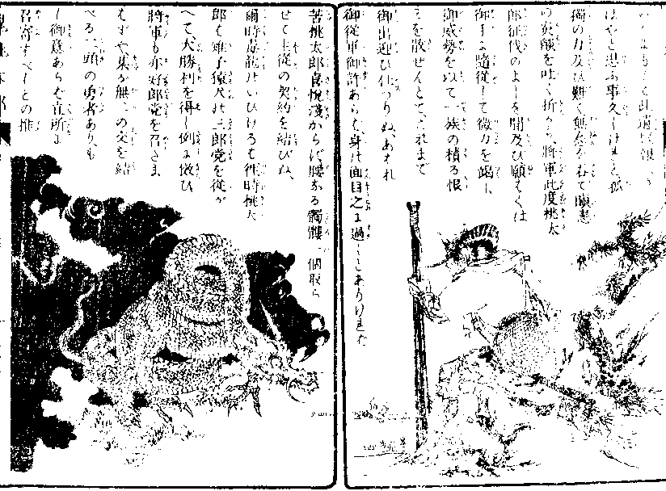
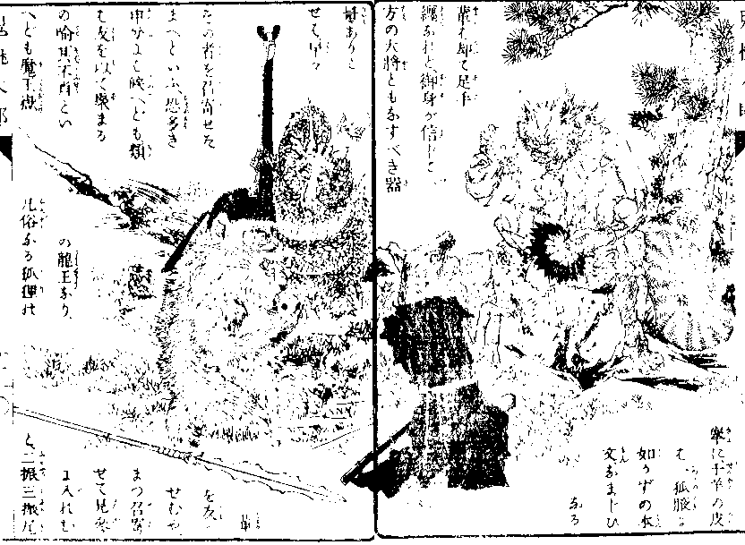

むかしむかし
翁は山へ
柴刈に、
媼は洗濯の河にて、
拾いし
桃実の
裏より
生れ
出でたる桃太郎、
猿
雉子犬を
引率［＃ルビの「いんぞつ」はママ］して
この鬼ヶ島に
攻来り、
累世の
珍宝を
分捕なし、
勝矜らせて
還せし事、
この島末代までの
恥辱なり、

あわれ願わくは
武勇
勝れたる鬼のあれかし、
其力を
藉てなりとも
この
遺恨霽さばやと、
時の
王鬼島中に
触を下し、
誰にてもあれ日本を征伐し、
桃太郎
奴が
若衆首と、
分捕られたる
珍宝を携え還らんものは、
此島の王となすべしとありければ、
血気に
逸る若鬼
輩、
ひこひこと額の角を
蠢かし、
我功名せんと
想わざるはなけれども、
いずれも桃太郎が
技※［＃「てへん＋兩」、U+639A、76-6］に
懲り、
我はと名乗出づるものも
あらざりけり、

茲に
阿修羅河の
畔に世を忍びて、
佗しく住みなせる
夫婦の鬼ありけり、
もとは
鬼ヶ島の
城門の
衛司にて
ありけるが、
桃太郎
攻入
の
砌敢なくも鉄の
門扉を
打摧かれ、敵軍乱入に
及びし
条、其身の
懈怠に
因るものなりとて、
斜ならず王鬼の勘気を
蒙り、官を
剥がれ世に
疎れ、
今は漁人となって余命を送るといえども、
何日は身の罪を
償うて再び
世に出でんことを
念懸け、子鬼の角の
束の間も忘るる
間ぞなかりける、

さるほどに
此触を聞く
嬉しさ、
茨木童子が
断落されし我片腕をも見たらん心地して、
此時なりと心ばかりは逸れども、
嚮に城門の
敗戦に桃太郎と
亘合わせ、
五十貫目の
鉄棒もて、
右の角を根元より
摧折れたる
創の今に
疼むこと
頻りにして、
不治の
疾を得たりければ、
合戦なんど思いも寄らず、
かかる時子だにあらばと
頻りに妻なる鬼を
罵りぬ、
されば妻の言いけるは、
伝聞く日本の桃太郎は、河に流れし桃より
生れて武勇抜群の
小児なり、
尋常なる
鬼胎より出でなん
鬼児にては、
彼奴が
敵手とならんこと
覚束なし、
妾夜叉神に一命を
奉げて、桃太郎
二倍なる武勇の子を
祷るべしと、
阿修羅河の岸なる夜叉神社に
参籠し、
三七日の
夜にして始めて霊夢を蒙り、その
払暁水際に
立出でて
見れば、いと大きなる
苦桃一顆浮波々々と
浮来りぬ、

扨はと嬉しく
抱還れば、
待構えたる夫の
喜悦たとうる方なし、
割きて見れば果せるかな、
核おのずから
飛で
坐上に躍ると見えしが、
忽焉其長一丈五尺の
青鬼と変じ、
紅皿のごとき口を開き、
爛々たる
火焔を
吐て
矗と
立たる
其風情、鬼の
眼にさえ恐ろしくも、
また
物凄くぞ見えたりける、
苦桃の
裏より生まれたればとて
苦桃太郎と名乗らせぬ、

扨夫婦
所志よしを語りければ
苦桃大いに喜び、
易き事かな、我
一跨に日本へ
推渡り、
三指にて桃太がそっ首引抜き、
其国の
珍宝の有らん限り
引攫うて還るべし、
これより出陣出陣と勇み立てば、夫婦のいうよう、
此条王鬼に
届出でずして
我儘に
出立せば、
或いは功も功とならずして、
却て
咎のあらんも
測り難し、
夫婦は罪を負う身の
拝謁
わざればとて、苦桃太郎
単身して
王城に到らしめ、桃太郎征伐の義を
言上しければ、
王鬼
火焔を吐きて
悦ぶこと限りなく、
八角に
削成して二百八十八
箇の
銀星打たる
鉄棒を
賜い、
爾之を
以て
桃奴が腰骨
微塵に砕けよと
ありければ、苦桃太郎
冷笑い、
桃太郎風情の
小童十人二十人、
虱を
拈るよりなお易きに、
安ぞ武器などの入り候べき、
仮初にもかかる物を賜う事
頗る
某が武勇を
気遣いたまうに似たり、
無礼を
御免し候え、
これ御覧ぜよ方々と、
側なる鉄の
円柱を小指もてゆらゆらと
盪揺かせば、満座
斉しく色を失い、
やれ苦桃
技※［＃「てへん＋兩」、U+639A、84-9］は見えたり、
止めよ止めよと
震慄きけり、

王鬼近く苦桃を
招きて、かかる
爾が
武勇を以てせば、
桃太郎を
滅ぼさん事
疑いなし、
別に取らす
べきものありと、
自家穿ぎたりし
白虎の
生皮もて
造れる
褌を解きて
投出し
たまえば
取て
戴き、
双の角に
引懸け、
手振足拍子
可笑く
外道舞というを舞い、
喜び勇んで
退出けり、
 明日
明日ともなりぬれば
王城より使者向いて、
鉄線の
嚢に
人間の
髑髏の
附焼十箇を
盛りて、
かの桃太郎が
黍団子に
擬え、
之を
兵粮にとて
賜わりぬ、
徂々て
鬼ヶ島の
堺に
来りたる頃、
魔風
遽に
颯々と
吹荒み、
瀑のごとくに
暴雨
沃ぎて天地鳴動し、
坤軸も折るるかと
想うばかりなり、
あら心地
好き
光景やと、
少時立留って
四方を
屹と見てあれば、
魔王岳の
絶頂に
当りて、電光の
閃く
裏に
金色の
毒竜現われ、
此方を目懸けて
箭を射るごとく
飛来る、

やあ
小賢しき
長虫の
通力立、
寄らば目に物見せんと
力足
蹈鳴らして身構うる
間に、
かの毒竜
舞下りて
太郎が前に
蜷屈くこと十三
巻、
舌を吐き首を
俛れていうようは、
某は魔王岳の
絶頂なる
湖水に
歳久しく
棲める
竜王なるが、
日本の地に
罷在る
眷族の
［＃「眷族の」は底本では「眷属の」］蛇類、
かの桃太郎が家臣なる雉子の
一類の
為に、
食まるること
年々その数を知らず、
いかにもして
此遺恨報えさばやと
思う事久しけれど、
孤独の力及び難く、
無念を
呑で
瞋恚の
炎
を吐く折から、
将軍此度桃太郎征伐のよしを聞及び、
願わくは
御手に随従して微力を
竭し、
御威勢を以て一族の積る恨みを
散ぜんとて、これまで
御出迎い
仕つりぬ、あわれ
御従軍御許あらば、
身の面目
之に
過じとありければ、
苦桃太郎喜悦浅からず、腰なる
髑髏
一個取らせて
主従の
契約を結びぬ、

爾時毒竜のいいけるは、
徃時桃太郎は
雉子猿犬の
三郎党を従がえて、
大勝利を得し
例に
傚い、
将軍も
亦好郎党を
召たまわずや、
某が無二の
交を結べる
二頭の
勇者あり、もし
御意［＃ルビの「ぎょい」は底本では「ぎょみ」］あらば
立所に
召寄すべし
との推挙に、
千羊の皮は
一狐腋に
如かずの
本文、
なまじいなる
輩は
却て
足手纏なれど、
御身が信じて一方の大将とも
なすべき器量ありとせば、早々
その者を
召寄せた
まえという、

恐多き申分には候えども、
類は友を以て
聚まるの
喩、
某［＃「某」は底本では「其」］不肖といえども
魔王岳の竜王なり、
凡俗なる
狐狸の
輩を友と
せんや、まず召寄せて
見参に入れんと、
二振三振尾を
掉れば
響宛然金鈴のごとし、
之を合図に
北方より
忽然として
白毛朱面の
大狒飛来り、
西方よりは牛かと
見紛うばかりの
狼躍出でて、一斉に太郎が前に
額けば、
苦桃岩角に腰
打懸け、
鴆の
羽扇にて
麾ねき、
実に頼もしき
器量
骨格、狒は猿の
首領にして
狼は犬の
強敵たり、
之に加うるに毒竜あれば、
桃太郎を一戦に
撃破らん事、
鉄槌を以て
土器を
摧くがごとし、いざ引出物取らせんと、
また
二箇の
髑髏を与え、いでや出陣と
立上れば、
毒竜再び策を献じていわく、某に
飛行自在の術の候、
瞬時にして日本国に到るべしと、虚空に向って
呼吸を吐けば、
不思議や黄雲
遽然蒸して眼前に
聚りぬ、主従之に打乗り、
宙を飛ぶこと西遊記の絵のごとく、一昼夜にして眼界
果しなき
大洋の上にぞ来りける、

苦桃太郎不審を起し、我等神通力を以てかく飛行しながら、
未だ日本の地に着かざる
理なし、毒竜
爰は鬼ヶ島を去ること
若干里ぞ、
さん候、
大約十二万三千四百
五十六億七千八百九十里、
おっと
其は
行過ぎたり、
戻せ戻せと逆飛雲の法を
行なわせて、無二無三に
退るほどに
還るほどに、また
戻過ぐること
九十八万七千六百五十四億
三万二千と一百里、これではならぬと
また出直して、行けば行過ぎ、
戻れば戻過ぎ、行つ戻りつ、
戻りつ行きつ、左へ
翔り右へ走り、
四面八角縦横無尽に
飛廻るほどに、
流石の毒竜の
魔力も
限あれば次第に疲れ、
雲は弱りて薄れ行き、
今は古綿のごとく
此処も
寸断れ
彼所も寸断れて、
放下たる
空隙より
践外して、
狒狼は
敢なくも
泡立海に落入りて、
鰐魚の
餌食となりけらし。

苦桃太郎之を見るより奮然として
怒を
為し、
おのれ毒竜、
爾が
魯鈍の
故を以て、
股肱の臣を
喪いたるぞ、
軍陣の
門出に
前徴悪し、
憎くき奴と
拳を固めて、
毒竜の
真額
砕けよと
乱打に
撃ければ、
もとより
暴気の
毒竜は
発憤の
眼に
朱を
濺ぎ、金の
鱗を
逆てたるは
木葉に風の
吹ごとし、

やあ小憎きおのれが大将
面、
いで竜王が
本事を見よと、
十間余りの尾を
風車のごとくに
舞わして、苦桃太郎を
七巻に
巻裹め、
骨も微塵と
固緊くれば、物々しやと苦桃太郎、
惣身にうんと力を
籠むれば、さしもの毒竜
弗つと
断れ、
四段となって
仆るれば、
魔力忽ち解けて
雲は
吹消すごとくなくなれば、
何かは以て
堪るべき、
苦桃太郎
迢々の虚空より
足場を失い、
小石のごとく真一文字に
舞下りて、
漫々たる
大海へぼかん！

 「おにが嶋の文字にて」書かれた『鬼桃太郎』の序文（紅葉筆）
「おにが嶋の文字にて」書かれた『鬼桃太郎』の序文（紅葉筆）